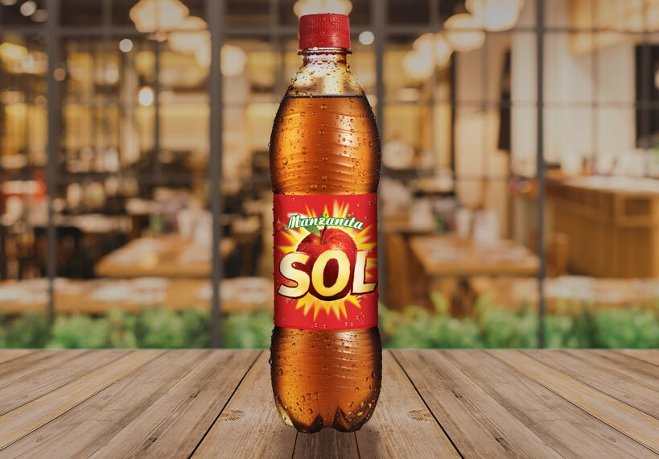

Manzanita Sol es una marca refresquera mexicana de refrescos con sabor a manzana, perteneciente a la compañía estadounidense PepsiCo que predomina en la Ciudad de México. En Latinoamérica, Manzanita Sol compite directamente con la marca actualmente extinta Manzana Lift de Coca-Cola.
iniciosFue creada por dos hermanos, Ramón y Manuel Rodríguez Fonseca, quienes fundaron Embotelladora El Sol luego de aprender el oficio de su padre, un industrial español que llegó a México en el siglo XX. La fórmula de Manzana Sol, una bebida con sabor a sidra, se registró en 1950
